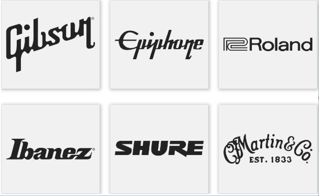

"Without music, life would be a mistake."
— Friedrich Nietzsche
DESPRE NOI
Music Master este mai mult decât un simplu magazin online – este poarta către călătoria ta muzicală.
Descoperă o lume de instrumente și accesorii muzicale de înaltă calitate, de la chitare electrice puternice
la seturi de tobe dinamice, viori elegante și claviaturi de ultimă generație. Cu branduri de top, oferte
exclusive și opțiuni de livrare rapide, te ajutăm să găsești sunetul perfect. Indiferent dacă ești începător
sau un veteran al scenei, Music Master dă viață muzicii tale – pentru că fiecare capodoperă începe cu instrumentul potrivit.
Chitare și Echipamente
Explorați colecția noastră de chitare acustice și chitare electrice.
Toate produsele sunt realizate cu lemn premium și includ garanție extinsă.
Instrumentele noastre sunt ideale pentru începători și profesioniști.
Descoperă colecția noastră: Prețurile din 2024 Actualizat pentru 2025!
Întreținerea echipamentelor
La Music Master, calitatea produselor noastre este prioritatea numărul unu.
Ne angajăm să oferim clienților noștri cele mai bune instrumente muzicale
și accesorii disponibile pe piață. Fiecare produs din oferta noastră este
selectat cu grijă pentru a îndeplini cele mai înalte standarde de performanță,
durabilitate și fiabilitate.
Pentru mai multe informații vizitați
articolul.
GHID PENTRU ÎNCEPĂTORI
Cumpărați în funcție de brand
Noutăți în lumea muzicii
Întrebări frecvente
Ce garanție oferim pentru chitare?
Oferim o garanție de 2 ani pentru toate chitarele achiziționate.
Care sunt metodele de livrare disponibile?
Livrăm prin curier rapid, iar comenzile de peste 300 lei beneficiază de transport gratuit.